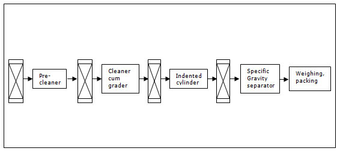

GPBR 112 :: Lecture 28 :: SEED PROCESSING

Seed lots received from the field are often at high moisture content and contain trash and other inert material, weed seeds, deteriorated and damaged seeds, off-size seeds, etc. Seed processing is necessary in order to dry the seeds to safe moisture level; remove or reduce to the extent possible the various undesirable material, weed seeds, other crop seeds, deteriorated or damaged seeds.
Other than this the seed lot heterogeneity in its physical characters like size, colour, shape etc. The seed lot is heterogeneous due to the following reasons
- The soil is heterogeneous and there is a lot of variability in the fertility status of the soil due to the availability of nutrients, physical, chemical and biological properties.
- Variability is introduced due to the position of seed set on the plant/fruit , time of pollination and fertilization over a period of time
- Variability is created by biotic factors like pest and variability infestation.
- Variability is also due to the management practices like water, land preparation, leveling, staggered sowing, and uneven distribution of fertilizer and irrigation water, uneven plant protection sprays and uneven maturity at harvest.
The inherent qualities such as germinability and vigour are exemplified by certain physical characteristics of the seed i.e., large size, a denser seed, optimum length etc., So, if grading is done to obtain a particular range of size, shape, length and density of the seeds, the quality of the lot is upgraded.
In its common usage in India, seed processing refers to all the steps necessary for preparation of harvested seed for marketing, namely, handling, drying, shelling, preconditioning cleaning, size grading, treating and packaging, etc.
Seed Processing Plant Layout Planning
Layout plan for construction of a seed processing plant should be carefully planned to ensure that the thorough seed cleaning, upgrading, seed treatment and other seed processing operations are carried out efficiently, without mixing and damaging seed lots, with a minimum of equipment, personnel, time and at minimum cost. The following factors should be considered in planning and designing a seed processing plant:
- Kinds of crop seeds to be handled and kinds of contaminating crop and weed seeds usually present in the seed lots
- Size of operation
- Whether drying facilities should be required
- Selection of suitable equipment
- Location of the plant
- Source of power for running machinery
- System of seed delivery to processing plant and
- Availability of labour
The key to efficient plant layout is a thorough knowledge of what needs to be done, and sound planning. First, the general sequence of processes involved between the time seeds enter the processing plant and the time they are cleaned, packaged and ready for shipment, must be charted. The sequence of operations depends upon the kind of crop and the initial quality of seed lot, type of contaminants, moisture content of the seed lot, etc. The layout planner must have an intimate knowledge of the seed to be processed, its physical characteristics, the contaminants in it, and also of the selection of machines used to bring the seed to acceptable marketing standards.
Seed Processing Plant Building Layout
Seed processing plant building will comprise of following components:
- Receiving-cum-drying platform
- Processing area
- Auxiliary building
Receiving-cum-drying platform
This area will be utilized to receive the raw seed and to sun dry small lots of crop seeds. This area can also be utilized for storage of seeds on wooden palettes. The platform will be connected to processing shed through a rolling shutter.
Processing area
The processing area should be situated between the shed and ventilated storage building. The hall should be connected to ventilated flat stores through a covered gallery for easy movement of processed and packaged seed to seed stores. The hall should have a big rolling shutter in the processing plant to permit entry of seed processing equipment into the hall for installation.
Height will be kept to facilitate installation of the seed processing equipment and machinery. A sequence of processing machines to be installed is shown in Fig. 1. Floor of the processing hall should be above the ground level.
The shed should have sufficient provision for natural as well as forced ventilation in order to maintain congenial atmosphere inside the shed. The shed should accommodate seed scalping, seed processing and packaging equipment and will have sufficient space for weighing and packaging.
Auxiliary building
In addition to building discussed above, a provision should be made for generator room. Sufficient length of road should be provided to connect various functional buildings with each other and main highway. Boundary wall should be provided all around the complex for security reasons. Entire complex should have a good drainage system.
Provision for firefighting equipment such as extinguishers, water buckets, sand buckets etc. should be made to fight minor fire hazards.
The processing plant building should be constructed as per CPWD/PWD norms. It should have tubular trusses, AC sheets pitched hole roof, cement concrete flooring finished with water-proofing cement paint, aerated, ventilated, rat proof and bird protection. Sealed doors should be provided in these buildings. Buildings will be suitably planned to have interconnection for movement of seeds and materials.
Analysis of Operation
a) Processing sequence: After the machines needed have been identified, the next step is to determine the proper processing sequence. The seed separators, elevators, conveyors and storage bins should be so arranged that seeds flow continuously from beginning to end, and yet be flexible enough to bypass a machine or return to a part for re-cleaning.

b) Matching capacity: Equipment size of capacity must be carefully planned to prevent bottlenecks. When the overall operating capacity needs have been determined, all machines must be able to handle that capacity with some reserve capacity for problem lots. Surge bins can handle variations in individual machine capacities. But when differences are great, either larger models, or more than one machine installed in parallel flow, must be used to maintain uninterrupted flow.
c) Conveying: The type of conveying system is also a very important factor. The conveying system must be able to handle the capacity needed in a particular spot. And it must be carefully adapted to the seed handled.
Type of Layouts
There are three main types of processing plant layouts: multistorey, single level and combination.
Multistorey: In this system, seed is carried by elevators to the top floor and emptied into large bins. Cleaning machines are then arranged in a vertical series on the lower floors. Seed flows from one machine down into the next by gravity.
Single level: In the single storey plant, seed is moved from one machine to the next by elevators placed between the machines. A great advantage of the single level system is that one man can supervise the processing line without running up and downstairs. He can thus maintain closer supervision of all operations.
Combined designs: A compromise between the single and multistorey system could also be adapted.
Planning
After the proper machines, elevator capacities, cleaning sequences, and lay out design have been selected, detailed layout planning can begin. Careful layout planning can identify and remedy bottlenecks and trouble spots before the plant is built, and thus prevent trouble later.
As the lay out or design develops, it should be drawn on paper. A good method is to draw lines of flow first and then convert these flow lines into machine lines. After appropriate revisions, detailed drawings can be made to show exact locations of equipment and distances. Scale drawings are the most widely used method of layout planning. Scale models and scale templates are also very effective, but are more expensive.
Requirements in seed processing
- There should be complete separation
- Minimum seed loss
- Upgrading should be possible for any particular quality
- Efficiency
- It should have only minimum requirement
Movement of seed in a processing plant
Handling of seed at the processing plant adheres to a definite path irrespective of crop for easy management of seed which is sensitive at each and every step of handling and ready to lose or gain its quality all through the steps.
Physical characteristics used to separate seeds are
1. Size grader : Based on size it can be separated with air screen cleaner cum
2. Length : Disc or indented cylinder separator
3. Weight : Specific gravity separator
4. Shape : Spiral separator or draper separator for round and flat seeds
5. Surface texture : Rough from smooth surface seed- dodder mill
6. Colour : Electronic colour separator
7. Electrical conductivity
Seed differing in their ability to conduct electrical charge can be separated with electronic separator.
8. Affinity to liquid
The seed coat of seed will absorb water, oils etc., which provides a means of separating seed on the magnetic separator.
The flow charts illustrating the types of materials removed from harvested produce during processing.
Seed processing equipments
I. Air screen cleaner
This is the most important machine of every cleaning plant. It uses screens and aspiration (air blow) for two separations (Fig.6). A coarse upper screen removes larger material, a lower fine screen stops the seeds and lets through fine matter and then the seed fraction passes through a transverse or nearly vertical air stream which can separate light impurities such as empty or partly filled seeds, husks and glumes from the seed. In most cases a number of sieves with different sized perforations are used and the cleaning is a process of gradually shifting out smaller particles. Factors which determine the quality and quantity of seed cleaned include (i) size of the perforations, (ii) the precision of the perforation, (iii) the angle at which the sieves operate, (iv) the amplitude and speed of movement of the sieves and (v) correct cleaning and maintenance of the equipment.
II. Cleaner cum grader
The dried seeds should be cleaned and graded with help of a cleaner cum grader. For large scale cleaning and grading the commonly available machine is the “Crippen Model Seed Cleaner cum Grader”.
It consists of the following parts
- A hopper in the top for seed filling
- A flutted roller below the hopper to regulate the seed flow to the screen.
- Screen (or) sieves: Perforated metal sheet with specific size of perforation in which there are two types.
- Rectangular perforations for paddy and
- Round perforations for seed other than paddy
- Screen shaking unit : for oscillating the sieves to move the seeds on the screens
- Screen brushes to remove the blocked seeds
- Air blower with adjustments for air outlet
- Collecting outlet
- Air duct for directing the blown up light particles to outside
- Collecting bins.
Working principle
The seeds are fed into the hopper and they are guided to fall on the first sieve. The first sieve is a scalping screen which scalps all the foreign materials larger and heavier than seed and the entire quantity of seed passes through the first sieve. The second sieve is a cleaning sieve which removes all the unwanted particles larger in size than the seed. The third sieve is actually the grading sieve which size grade the seed lot and bring into a uniform size and which also screen the undersized, shriveled and immature seed, dust and dirt. The seeds are then rolled and passed through air column, where they are relived of the light chaffy and other materials by the blowing air.
Adjustments
Flutted roller
The speed of this roller can be adjusted so as to increase (or) decrease the flow of seeds to the hopper of the sieves.
Slope (or) inclination of the screen
The angle of inclination of the screens can be adjusted according to the nature of seeds.
Rate of vibration of sieve
This can be adjusted either to increase or to decrease the speed of the rolling seeds on the screen.
Volume of air flow: By increasing (or) decreasing the air inlet.
Choice of screens: According to variety we have to change the screen
Screen dams
Small check dams, which can be provided here and there on the screens so that the seeds can be stopped a while and takes the charge either to pass or to roll.
Types of seed cleaner cum grader
I) Crippen model cleaner cum grader
ii) Clipper model cleaner cum grader
iii) Petkas cleaner cum grader
III. Disc separator
It consists of a series of discs, which revolve together on a horizontal shaft inside the cylindrical body. Each disc contains many under cut pockets. The seed enter the intake end of the separator and move through the open centers of the discs towards the discharge end of machine. As the discs revolve through the seed mass the pockets lift out short seed but rejects longer seed. Longer seeds are conveyed by flights on the disc spokes towards the discharge end of the machine where they go out through the tailings gate. The rate of seed travel through the open disc centers is controlled by conveyor or blades attached to the spokes of the discs. The disc separator makes a very precise separation. No factor other than seed length and shape affects its separation. Flexibility is obtained by varying size of the pockets.
IV. Indented cylinder separator
The indented cylinder separator is a rotating, almost horizontal cylinder with movable, horizontal separating adjustments which are mounted inside it. Indent lines are there inside the surface of the cylinder. The indented cylinder revolves, turning the seed mass to give each seed a chance to fit into indent. Short seeds are lifted out of the seed mass and are dropped into the lifting and long seeds remain in the cylinder and are discharged out via., a separate spout at the end of the cylinder.
Lab Model
As the cylinder revolves, it creates centrifugal force which helps to hold the seed in the indent. Short seeds are held in the indent until the cylinder turns to the point where the indent is inverted enough for gravity to cause the seed to fall out of the indent. The length, surface texture and size of seeds determine how they fit into the indent, so that it can be lifted out of the seed mass. The speed of the cylinder creates centrifugal force which holds the seeds in the indent as it are lifted upward. Thus the shape and size of the seed to cause some seeds to fall out after being lifted only a short distance, while other seeds are lifted closer to the top of the cylinder before they fall out.
Working principle of the indented cylinder separator
As the seeds enter the cylinder, the small, short, easy to separate seeds are quickly removed. The center cylinder section removes the intermediate sizes of seeds still in the cylinder. All indents in a cylinder are the same size, only the progressively declining amount of material to be lifted causes this difference in separating action.
Adjustments
- Cylinder speed 2) Size of the indent 3) Trough setting 4) Tilt of the cylinder 5) Adjustable retarder.
V. Specific gravity separator
Seeds of the same size and general shape can often be separated because they differ in specific gravity or relative weight. This difference is very useful in removing light, immature seeds or heavy sand and rocks to improve the purity and germination of crop seeds.
Lab Model
If seeds which differ in specific gravity (relative weight / unit of volume) are placed on substrate of intermediate density, seeds of higher specific gravity will fall down through the substrata, while seeds of lower specific gravity will be buoyed up the substrata. Here air is used as separation substrata.
Working principle of the specific gravity separator
As seeds flow on the deck of the gravity separator, they enter a column of air coming up through the porous surface of the deck. The pressure of terminal velocity of the air rising through the deck can be controlled very closely to separate two kinds of seeds differing in specific gravity, the air is adjusted so that only the lighter seeds are lifted up off the deck surface. These lighter seeds are held up by air pressure and tend to float on the deck surface. The heavier seed possess a velocity greater than that of the air columns so they are not lifted and so will lie on the deck surface. The air column thus stratifies the seed mixture into vertical zones of relative weight with the heavier seed lying on the deck and the lighter seeds lifted up to the top of the seed mass.
Adjustments
1. Feed rate 2) Air flow 3) End slope 4) Side slope 5) Deck oscillation speed 6) Deck speed.
VI. Roll mill or dodder mill or velvet roll mill
It is used to separate the seeds based on surface texture and shape. This separator should be used only after the seed has been carefully cleaned and separated from the chaff. These are effective in separating seeds with a rough seed coat or shape angles from smooth seeds.
Working principle of the roll mill
The roll mill consists basically of two roller, covered with flannel or velvet, placed side by side, so that they touch each other down their entire length. The rollers are mounted on an incline and they turn in opposite directions. A curved adjustable shield is mounted above the rollers.
Separating action
The mixture of smooth and rough seeds is fed into the place, where the rollers touch each other, at the high end of the machine. As the rollers turn up and out, seeds that are rough or have sharp or broken edges are caught by the nap of the fabric covering the rollers. These seeds are thrown up against the curved shield. They strike the shield at an angle, bounce back down to the roller and are again thrown up against the shield. Smooth seeds bounce down the inclined position forward between the rollers, and discharge at the lower end of the machine. They are not affected by the fabric roller covering, and are not pitches over the side of the rollers.
Adjustments
1) Rate of feed 2) Speed 3) Clearance between shield and rolls 4) The angle of inclination of rolls.
VII. Magnetic separator
The separation is mainly based on the affinity for liquids which is used for separation. Since seeds contains no free iron and are not attracted by a magnet they must be selectively pretreated with a magnetic material such as finely ground iron powder. Rough seed coats, cracked or broken seed coats, dirt lumps, chaff or seed with a sticky residue on the surface will hold the liquid and become sticky, so that iron powder will adhere to them. Smooth coated seeds will not absorb liquid. So no iron powder will adhere to them.
The seed are then discharged from mixing chamber and brought into contact with a powerful magnet, which removes the iron coated seeds. Most magnetic cleavers pass the seeds over a revolving drum which has a high intensity magnetic field. Seeds with an affinity for liquids which are now coated with iron powder are attracted by the magnet and adhere to the drum until they are removed by a brush or scraper. Seeds which are relatively free of iron powder are not attracted by the magnet and will fall into a separate discharge spout.
The first requisite of magnetic seed separation is that the seed to be separated must possess different seed coat characters. Crop seeds should have a smooth surface, while the seeds to be removed should have a rough surface which will retain liquid and can accept the iron powder. Success in separating the components depends upon the magnitude of seed coat differences and thoroughness with which the moistened seeds and the iron powder are blended.
VIII. Colour separator
Many large crop seeds such as peas and beans differ in colour between varieties. Colour variation may also occur due to immaturity or disease. Electronic colour sorting machines can separate such seeds by difference in colour and also remove mud balls and discoloured seeds in the same operation.
The electronic colour sorter views each seed individually with photo electric cells. The seed is compared with a selected back ground or colour range and is discharged from the machine according to its colour. If it is the great desired colour, the seed is discharged through the good seed spout. If its colour or shade falls within the reject range, a blast of compressed air deflects the seed and sends it in to the reject discharge spout. These are highly sensitive. Since the machine views each seed individually, capacity is low, but the initial cost is high and operating cost is less. The usefulness of machine is greater with large seeded crops.
IX. Spiral separator
The separator, which classifies seed according to its shape and rolling ability, consists of sheet metal strips fitted around a central axis in the form of a spiral. The unit resembles an open screw conveyor standing in a vertical position. The seed is introduced at the top of the inner spiral. Round seeds roll faster down the incline than flat or irregularly shaped seeds, which tend to slide or tumble.
The orbit of round seed increases with speed on its flight around the axis, until it rolls over the edge of the inner flight into the outer flight where it is collected separately. The slower moving seed does not build up enough speed to escape from the inner flight. Most spirals have multiple inner flights arranged one above the other to increase the capacity.
Processing equipments used for improving the quality of the seed
From harvest upto final stage of seed storage, the seeds are to pass through various seed proessing equipments depending upon the speciality and specificity. But some equipment like driers and seed cleaner cum graders are common for all types of seed. The processing machineries and equipments used in the seed handling are as hereunder.
S.No. |
Processing equipments |
Usage with reference to specific seed management |
A. |
Threshing with extraction equipments |
|
1. |
Thresher |
To remove the seeds from the inflorescence especially in cereals |
2. |
Ginning machine |
To separate the lint and seed from kapas in cotton |
3. |
Maize sheller |
To shell the seed from the cobs |
4. |
Pulse thresher |
To remove seed from the pods |
5. |
Tomato seed extractor |
To extract tomato seed from fruit without wasting the pulp |
6. |
Chilli seed extractor |
For easy removal of seed from chilli fruits |
7. |
Groundnut decorticator |
To shell the kernel (seed from the pods |
8. |
Sunflower thresher |
For removal of seeds from the head |
9. |
Debearder |
To remove the awns form (Barley) the seed |
10. |
Mechanical scarifier |
To scarify the hard seed mechanically to improve the germination of seeds |
11. |
Pebble mill |
To remove webby hairs from grasses |
12. |
Timothy bumper mill |
To remove weed seed from timothy seed |
13. |
Hammer mill |
To remove the hook or appendages from the seeds (i.e. Stylosanthus) |
B. |
Driers |
To reduce the moisture content to lower or needed level for safe handling both for processing and for storage at the final stage |
C. |
Grading equipments |
|
14. |
Cleaner cum grader |
This homogenize the precleaned seed based on size and is known as basic grading in seeds. The sieve sizes requirement vary with crop |
15. |
Precleaner and aspirator |
This remove the inert material and dust particles from seed and improve the grading efficiency |
D. |
Upgrading machines |
|
16. |
Specific gravity separator |
Improve the quality of graded seed further using its weight or specific gravity. Heavier seeds are good storers and expresses maximum field establishment |
17. |
Indent cylinder |
In lengthier seeds it maintains the size of seed (breadth and length). The broken / damaged are removed and good seeds are selected |
18. |
Disc separator |
It is for removal of weed seeds and to improve the general appearance of seed |
19. |
Roll mill |
To separate smooth seed from rough seed based on the surface texture especially the weed seed |
20. |
Magnetic separator |
Removal of weed seed from clovers, alfalfa, trefoils and vetch |
21. |
Inclined draper |
Separation of smooth or round seeds from rough, flat or elongated seeds |
22. |
Electronic colour sorter |
Separation of off-coloured seed |
23. |
Electrostatic separator |
Based on electrical properties removes Johnson grass from sesamum seeds (Specific utility) |
24. |
Spiral separator |
Separation of seeds based on shape (eg.) separation of rape, vetch and soybean seed form wheat, oat or rye grass |
25. |
Polishers |
To improve the luster of seed |
26. |
Picker belts |
To remove undesirable ears / pods from shelled seeds (eg.) Groundnut, Corn |
27. |
Vibratory separator |
Removal of weed seed |
28. |
Seed treater |
To treat the seed with fungicide and pesticide |
29. |
Seed packing machine |
To easier the work and to avoid human error of mixing |
30. |
Conveyors / Elevators (Belt , Bucket) |
Easier the transfer of seed from machine to machine and avoids the contamination of seed at various level. |
Though all the machines are highly useful in improving the seed quality, specific machines are utilized for specific crop. The sequential usage of machineries varies with crop seeds (Gregg, 1967).
Precautions in handling processing equipment
All machine adjustments like the speed, oscillation and duration should be perfect. Otherwise, it will result in mechanical damage of seed which reduces the quality of seed in terms of vigour, viability, storability and field stand. Drying of seed should be designed properly as the moisture content needed for threshing; grading, treating and bagging vary with operations. Dosage, exposure period and choice of chemical are important in mechanical seed treatment.
| Download this lecture as PDF here |